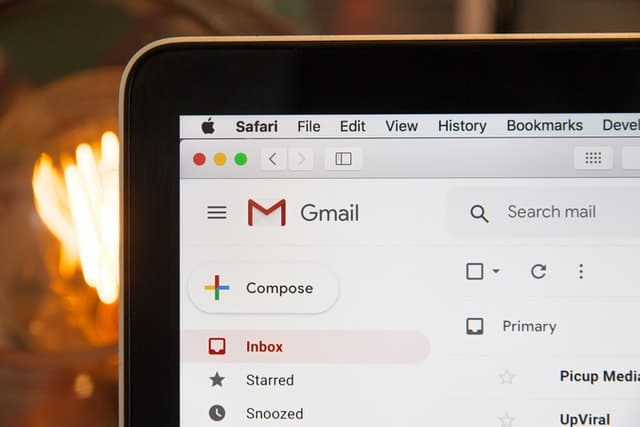
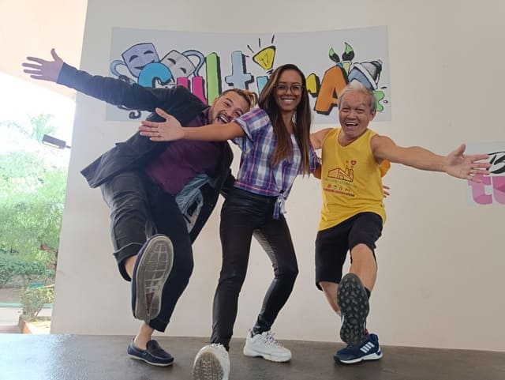

Fábrica de Felicidade - 2022
Humanização
Por Shin emO que é humanização?
Definição curta e simplificada: humanização é tornar ou tratar como humano. Se você veio para buscar o termo, a leitura já foi concluída.
Como chegou até este parágrafo é um sinal de que esteja procurando algo a mais do que os outros sites dizem, todos baseando-se no mesmo conteúdo porém com palavras diferentes. Incrivelmente, lendo sobre este tema, constatou-se que nas publicações se fala de conceitos, necessidade de ferramentas, sistemas etc para aplicação da humanização.
Refletindo um pouco, quem escreveu essas coisas provavelmente não entendeu sobre o assunto, pois a humanização também deve ser aplicada por um outro ser humano.
De nada adianta possuir sofisticadas e caríssimas ferramentas com inteligência artificial, fazer um sistema complexo para mensuração de colaboradores, se na verdade não estiver pensando de fato em todas as pessoas da empresa. Até porque as empresas são formadas também por pessoas.
Uma Reflexão na Prática
Vamos ver uma história que provavelmente você já viu ou talvez se identificará.
Começamos pelo primeiro contato da empresa com o colaborador. A grande maioria dos RHs cadastram-se em sites para encontrar candidatos para suas vagas. Site não é humano.
Então, o sistema detecta que um usuário de RH está buscando candidatos, faz uma busca na sua base de dados e dispara um e-mail automático ao candidato informando o interesse da empresa. E-mail automático não é humano.
Até este ponto ainda é possível relevar os argumentos do RH: "Existem centenas de candidatos. Não conseguimos ficar selecionando manualmente."
O Teste
Portanto vamos dando seguimento no processo de contratação. Os candidatos fazem um teste on-line para verificar suas habilidades. Teste on-line não é humano.
Aqui já começam a ser apresentados os impactos da falta de humanização. Se o conhecimento for testado humanamente, as chances de contratação efetiva aumentam e muito.
Em relato, nosso CEO Shin preencheu três vagas em apenas um dia colocando em prática um método humanizado. Não eram vagas simples pois havia grande urgência. Além disso os requisitos não eram tão comuns. As vagas estavam paradas havia meses no RH. Se está curioso sobre como foi feito este processo, deixe nos comentários no final deste artigo.
Resultado da Avaliação
Continuando com o processo tradicional do site, foi avaliado automaticamente quem tirou as maiores notas baseadas no teste, tudo previamente programado. A avaliação automática não é humanizada.
É possível que um grande talento cometa algum erro no teste e sua nota seja uma das piores. Neste caso a empresa contratante nem fica sabendo que talvez o melhor colaborador do mundo fez um teste na sua empresa, mas não chegou a ter nem uma oportunidade de contato. Isso graças as benditas ferramentas de automatização.
Já com os resultados dos candidatos com as melhores notas, podem ser enviados e-mails, por vezes manuais e em outras, automaticamente da agenda, solicitando continuidade para a fase de entrevistas. Se os e-mails forem automático da agenda, não é um processo humanizado.
As entrevistas e seguintes conversas até a contratação, o candidato passa por um período humanizado (a não ser que já inventaram um robô para conversar com os candidatos). Eis que finalmente a pessoa é contratada. Viva!
Boas-vindas
No dia seguinte, recebe um pacote via correio com seu kit material de trabalho.
Humanizado? Acredito que já não é necessário responder. Uma simples reunião com os novos contratados já faria uma grande diferença no sentido de humanização.
A chegada à empresa é um dos pontos mais importantes para estimular um bom clima organizacional.
Porém, a grande maioria de RHs pula o processo de uma boa integração de colaboradores. A primeira impressão é a que fica, em todas ocasiões. Uma dica é conhecer a 👉Fábrica de Felicidade👈 para promover uma integração inesquecível, humanizada e que os colaboradores irão ter orgulho em pertencer a empresa.
Vaga Preenchida
De volta a história do novo contratado, vem o dia a dia.
Questionando os colaboradores, quase que na totalidade dirá que o seu setor trabalha mais que os outros. Este é um sintoma clássico da falta de humanização. O normal no ambiente corporativo é somente olhar para si. Desta forma, o desgaste do seu trabalho faz ter a falsa impressão de que seu setor trabalha demais e que ninguém reconhece isso. Talvez seja hora de olhar para os outros, entender, respeitar e tentar ajudar quando possível. Isso é chamado de humanização.
É sobre aquela pessoa que todos acham que é raivosa, não tem amor no coração. Mas um dia descobrem que dentro da casa dela, ela sofre com violência doméstica e possui um filho com sérios problemas. Reconhecer isso é humanização.
Respirar na situação de estresse pode ajudar muito para conseguir humanizar. Evitar falar de forma agressiva, manter a cordialidade. É compreender que do outro lado também existe uma pessoa que tem seus sentimentos e problemas.
Sua Atitude
Não sinta culpa caso tenha se enquadrado nos tópicos apontados neste texto. Isso tudo é o que normalmente acontece no ambiente de trabalho. Mas reconhecendo que o problema existe, não demore para tomar uma atitude para humanizar.
Caso alguém atinja objetivos, elogie. Se possível, comemore. Alavancar o próximo é nobre. E uma mão lava a outra. Crie laços.
O Final
Mas até que um dia, chega o fim. A demissão. E-mail, SMS, script falado pelo RH com dizeres que o colaborador não se enquadrou no perfil da empresa ( mesmo com colaboradores próximos a 10 anos de empresa, uma cordialidade que torna-se ofensiva). Isso tudo não é humanização.
Humanizar é entender que existe vida em quem está sendo demitido. É a fonte de renda de uma família. Nessa situação, indique a conhecidos, oriente os pontos a serem melhorados, seja franco com este ser humano e ajude como puder.
Conclusão
Este artigo esboçou na prática o que se vive na maioria das empresas. A humanização é somente um termo, pois na verdade, quase não é praticada.
É tão feio quanto os dizeres: "orgulho em fazer enfermagem". Mas quando você chega precisando de atendimento, toma aquela injeção com toda raiva do mundo que mais parece estar colocando uma estaca na parede. Não generalizando toda a categoria de enfermeiros, mas foi um exemplo que infelizmente vivenciei algumas vezes.
Um vídeo com uma música chamada Human para sentir um pouco através da visão e audição o que é humanizar.
Muita gratidão pela sua leitura e um forte abraço. 😉